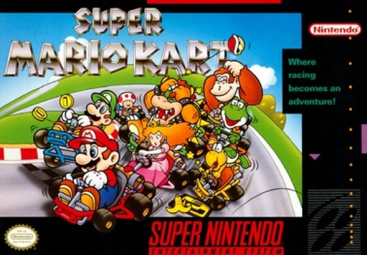

Racing · 1992
Super Mario Kart
Items as rubber-band physics; the party racer invented in one go.

Cover: Wikipedia: Super Mario Kart
Facts
- Released
- 1992-08-27
- Genre
- Kart Racer
- Category
- Racing
- Platforms
- Nintendo
- Developers
- Nintendo Entertainment Analysis & Development
- Publishers
- Nintendo